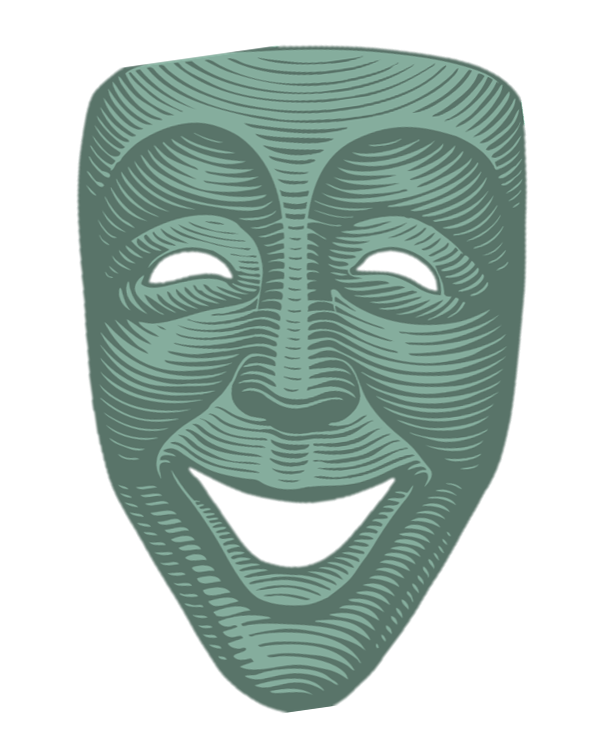

הטרגדיה בתוך הקומדיה
דיברנו בקורס לא פעם על שאלות הנוגעות לסוגות הדרמתיות של קומדיה וטרגדיה בתקופתו של שייקספיר.
בשיעור הבא, כשנעמיק את קריאתנו ב"רומיאו ויוליה", נלמד גם יותר לעומק על האופן שבו שייקספיר התפתח בסוגה הטרגית עד שכתב את המחזה.
אבל לפני כן, בואו נסכם מספר נקודות חשובות בנוגע ליחס בין קומדיה וטרגדיה.